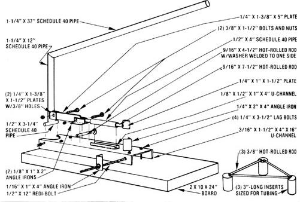
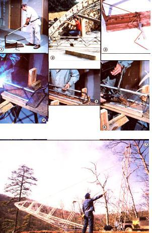

One of the components most commonly used in projects out at the Eco-Village is antenna truss . . . a lightweight, sturdy, triangulated material made from electrical metallic tubing (E.M.T.) and 1/4" steel rod. And despite all the articles we've run about things built with the versatile framework, we've never explained just how we go about assembling it . . . at a considerable saving over the cost of buying the commercial variety.
Truss gains its strength by virtue of the fact that its triangulated members are subjected to either compression (pushing) or tension (pulling) rather than bending, as is the case with a simple beam. Since materials generally have more strength under compression and tension than they do when subject to bending, truss sections can be both lighter and stronger than can a comparable single member. Of course, antenna truss was specifically designed to resist flex and twist. That property makes it especially sturdy when sticking up in the air (to hold a windplant, for example), but we've found it to be quite useful in many other applications, as well.
For standing towers, three-tube truss provides the most strength, but simple bar truss (made with two pieces of E.M.T. and an interlace of the 1/4" steel rod) can be quite effective for supporting loads in a horizontal plane. The following explanation will lead you through the process of building the three-tube material . . . but if your application could be handled by simple two-tube truss, then you can just stop part-way through the procedure.
E.M.T. comes in bundles of ten 10'-long pieces, and-fortunately-the lengths are usually uniform enough to allow the tubes to be married without any trimming. We use a wooden frame to hold the conduit in place during truss fabrication. It consists of a 2 X 10 X 12' board with stops placed 10 feet, 1/8 inch apart. Locater strips, made from a 10' piece of one-by stock ripped to 1" widths, are nailed to each edge to keep the tubes from falling of the board, and to the center to hold them apart. This leaves a considerable gap between the locaters . . . so that tubes of different diameters (we've used 3/8", 1/2", and 3/4" material) and truss of varying widths can be handled.
Once the E.M.T. is placed in the frame, you'll have to decide how wide the truss you're going to build will be. Naturally, there are a number of different considerations involved in this decision . . . including strength and convenience. (If you have any doubt about the ability of the truss to handle the load you're going to put on it, then either calculate the stress, strain, etc. according to engineering procedure, or ask someone else to do it for you . . . using the information in this article.)
The distance between the tubes will determine how the 1/4"-steel diagonals will be bent. Since the corners that you'll form in this basic (also called "Warren") truss will be 90°, you can figure out the length of each straight section according to the following simplification of the sine law: The diagonal length will be equal to the distance apart times 1.4. Thus the 1/4" rod used in 6"-wide truss will be bent about every 8-1/2 inches.
We use the brake shown in the accompanying illustration to form the 90° angles in the rod, and if you're going to make very much truss, we recommend that you build one like it. The tool will make your work go more quickly, and its length stop (which consists of a threaded rod jutting from the side of the device, plus a piece of 1" angle) will guarantee that the turns are the proper distance apart. With one person working the handle and another moving the rod (a task that involves simply flipping it and pulling it through a little), a 10' length can be formed in less than a minute. (Of course, to get a 10'-long piece of finished diagonal, you'll need at least 14' of straight material.)
Take your section of bent rod and lay it between the tubes in the form. If your bends are perfect, the diagonals may fall right into place between the tubes . . . but we often have to use some C-clamps or locking pliers to force the rod into position. Either oxyacetylene brazing or gas or arc welding will produce acceptable joints between the tubes and the rod. Remember, though, that the tube walls are thin, and too much heat will burn them right through. (WARNING: E.M.T. has a zinc coating and should be welded only in a very well-ventilated area!) Also, be sure to work down the length of the truss, moving from side to side to prevent the heat from deforming the rod.
If you're building simple truss, your first length will now be finished, but those who intend to form a tower need to bend up two more sections of diagonals. Then, in order to piece together the three-tube models, you'll use a jig that consists of three rods slightly smaller than the inside diameter of the E.M.T., attached to form the desired triangle. One of these jigs is inserted into the trio of E.M.T. on each end, and then the bent rod can be laid in place and bonded. (Be sure to stagger the joints so that the welds aren't too close together on any one tube.)
In instances where more than 10' of truss is necessary (our 60'-high windplant tower is an example), we simply insert rods into the tubes at the joints and then weld the three pieces together. (The pins, as they're often called, should be at least 6" long for security.)
Of course, our windplant tower consist of three legs made of triangulated sections, which further increases its strength. In addition, each section of the tower is-itself-triangulated through the use of tensioned cables . . . and we braced the assembly with guy wires as well. Short of making some very elaborate calculations, we judged that the best approach was to be very conservative in building the structure, and so far it's taken the worst that Mother Nature has dished out.
Besides the windplant, we've put together a Savonius rotor tower, a dock, two trailers, supports for a methane digester, and numerous form reinforcements for concrete and cordwood construction (including the round pattern for the stackwood dome) with antenna truss, and we've been thoroughly satisfied with our homemade material's performance. Who knows . . . maybe sometime soon we'll even build an antenna with it!
EDITOR'S NOTE.: You'll find another approach to tower building in the article on page 63.
|
 |
 |
|